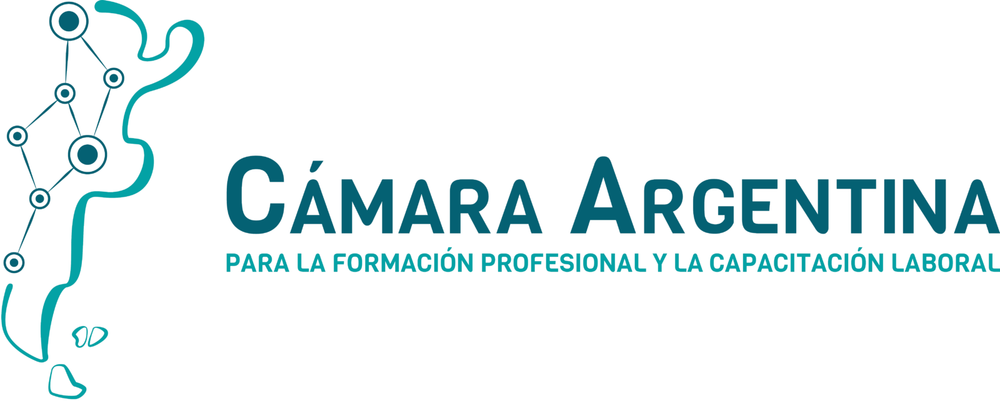

Ir al contenido
PROTOTIPO
Instituciones, cursos y valoraciones de ejemplo. No representa una evaluación de socios reales.

f
forma
.
Cursos de la Cámara
¿Qué querés aprender?
Explorar cursos
Instituciones
Sello formativo
Educación no formal · Argentina
×
CONSULTA AL INSTITUTO
Encontraste tu próximo curso
Esta es una demostración. En la versión real, podrás consultar al instituto por su canal institucional verificado. No se envían mensajes ni se recogen datos personales.
Seguir explorando
×
CONOCÉ ANTES DE ELEGIR
Material audiovisual
×
CONECTÁ CON EL INSTITUTO
Redes sociales
Perfil ficticio: el enlace está pendiente de configuración. En el catálogo real, este acceso abrirá la cuenta institucional informada por el socio.
Entendido